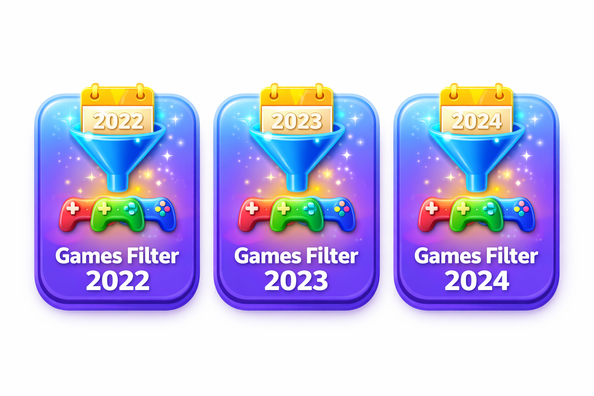

Explicații Funcții
Programul este organizat în mai multe funcții care realizează operațiile principale asupra listei.

Funcții precum creare(), parcurgere(), inserare() și stergere() formează nucleul aplicației. Acestea permit manipularea de bază a nodurilor din lista dublu înlănțuită.
Funcții Avansate
Pentru analiză și sortare, programul include ordonareRating(), care sortează jocurile descrescător, și diverse funcții statistice pentru ratinguri.
Filtrarea după an se realizează prin funcția jocuriDupaAn(), oferind utilizatorului posibilitatea de a restrânge căutarea.